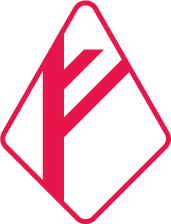
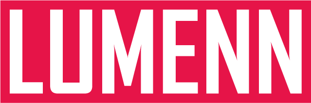
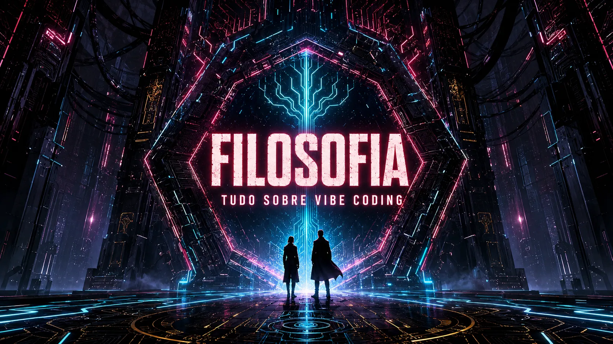
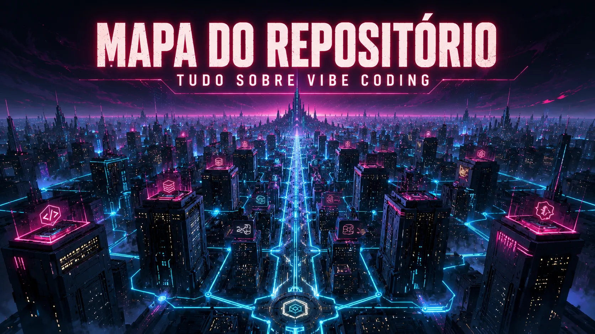

GSD
Get Shit Done
Nenhuma linha de código sem uma SPEC.md aprovada. Construir a coisa certa, não apenas construir rápido. Fases com plano, execução e verificação empírica.


GitHub ↗Hub de conhecimento · Open source
Programação guiada por IA, orquestração de agentes e engenharia de contexto: do spec ao deploy, com memória que nunca esquece.
A filosofia

Você define a vibe (a visão, as especificações e as regras) e uma orquestra de agentes de IA executa as tarefas, mantendo o contexto e aprendendo continuamente. O desenvolvedor deixa de ser codificador e vira arquiteto de sistemas cognitivos.
Get Shit Done
Nenhuma linha de código sem uma SPEC.md aprovada. Construir a coisa certa, não apenas construir rápido. Fases com plano, execução e verificação empírica.
Persistente
Três arquivos simples (primer.md, .claude-memory.md e tasks/lessons.md) dão à IA estado atual, histórico e autoaprendizado a cada sessão.
Workflow colaborativo
Planejar ➔ executar ➔ verificar. Planos em tasks/todo.md, lições em tasks/lessons.md, sub-agentes para o que é complexo.
Ecossistema
check_local_llm.py diz quais cabem, sem baixar nada.
Harness
Codex CLI
Agente da OpenAI no terminal: /init, AGENTS.md, skills e plugins.
Harness
DeepSeek Harness
O dsh: tudo é plugin, Web UI local via npx @deepseek-ai/dsh web.
OpenAI
Dots + migração de GPTs
Agentes always-on (29/09/2026) e o prazo de 11/12/2026 dos GPTs para plugins.
Conectores
MCP na prática
Do conceito ao primeiro servidor, com configs para Claude Code, Codex e Gemini CLI.
Plugins
Ecossistema de Plugins
Os 5 sistemas de plugin comparados e o formato de skill que é portátil.
Modelos
Fine-tuning local
Quando treinar (e quando não): decisão, pipeline Unsloth → GGUF → Ollama.
Mapa do repositório

Foundry VTT

Nove módulos desenvolvidos para a mesa, do diagnóstico de conexão ao celular diegético.
Como começar

Leia os guias de Claude Code e GSD 2 para internalizar os conceitos.
Siga o guia de memória persistente e crie a estrutura no seu projeto.
Ciclo Planejar ➔ Executar ➔ Verificar, com planos e lições documentados.
Explore as ferramentas listadas e os guias de pasta (Codex, Ollama, DeepSeek Harness, Dots, MCP, Fine-tuning, Plugins) e veja o que cabe no seu fluxo.